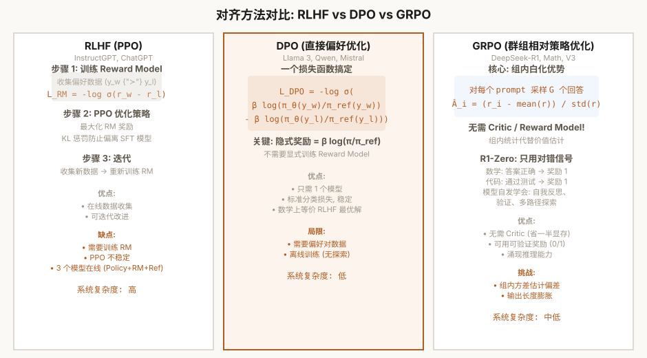

第9章 微调与对齐
SFT / LoRA / DPO / GRPO——从预训练到有用助手的最后一公里
本章怎么学：把对齐看成“让模型按人类意图回答”
- 前置知识：第 7 章训练循环、第 8 章生成，以及 log probability。
- 学习目标：区分预训练、SFT、PEFT、偏好优化和强化学习对齐，并推导 SFT mask、LoRA、DPO、GRPO 的损失信号。
- 课前阅读：阅读 InstructGPT、LoRA、DPO 和 DeepSeek-R1/GRPO 摘要，列出每种方法需要的数据格式。
- 课后阅读：阅读 alignment tax、reward hacking、RLHF 安全评估材料，并比较 offline preference learning 与 on-policy RL。
- 本章产出：SFT/LoRA/DPO/GRPO 的最小实现和适用场景地图。
- 完成标准：你能判断一个需求应该用 SFT、LoRA、DPO 还是 RL 类方法。
- 练习产出：提交 masked SFT、LoRA 参数统计、DPO/GRPO toy 实验、偏好数据错误分析和安全风险说明；配套作业见 assignments/ch09_alignment/。

图 9-1: 对齐方法对比——RLHF(PPO) vs DPO vs GRPO
9.1 为什么预训练不够？——从"文本续写器"到"助手"
经过第 7 章的预训练，我们得到了一个能合理续写文本的 GPT 模型。它学会了语法、事实知识、甚至某种程度的推理能力。但如果你直接问它"请解释反向传播"，它的输出很可能是这样的：
——它是一个优秀的文本续写器，但不是有用的助手。问题在于预训练的目标函数是"预测下一个 token"，而不是"回答问题"。对齐（Alignment）就是弥合这个差距的过程。
对齐的三大目标——HHH
- Helpful（有用）：模型应按用户意图执行任务，而非简单地续写文本
- Honest（诚实）：模型应"知道自己不知道"，减少幻觉（hallucination）
- Harmless（无害）：模型不应生成有害内容
对齐技术栈全景
| 技术 | 数据类型 | 需 RL | 复杂度 | 代表模型 |
|---|---|---|---|---|
| SFT | 指令-回答对 | 否 | 低 | GPT-3.5 (初始) |
| RLHF (PPO) | 偏好对 + RL | 是 | 高 | ChatGPT, Claude |
| DPO | 偏好对 | 否 | 中 | Llama 3, Mistral |
| GRPO | 偏好对 + 组采样 | 是（无 Critic） | 中高 | DeepSeek-R1 |
9.2 监督微调 (SFT) 的理论——损失掩码的核心作用
监督微调（SFT）是最基础的对齐方法。我们在人类标注的指令-回答对上继续训练模型，调整模型的行为模式。
SFT 的关键细节：只对回答部分计算损失
一个常见的误解是 SFT 和预训练的训练目标相同——都是交叉熵。但一个关键区别是损失掩码（loss masking）：在 SFT 中，指令部分（prompt）不计算损失，只有回答部分（response）参与梯度更新。
为什么？
- 指令由用户提供——模型不需要学习如何生成用户指令。计算指令部分的损失是浪费计算资源。
- 防止分布偏移——训练时模型看到的是真实指令，但推理时指令由用户提供。如果模型学会了"生成指令"，推理时会产生混淆。
具体实现：label 中指令部分设为 -100（PyTorch 的 ignore_index），交叉熵自动忽略这些位置。
数据格式：ChatML / ShareGPT
SFT 数据通常使用结构化格式：
特殊 token（如 <|im_start|> 和 <|im_end|>）帮助模型区分对话角色。训练时，从 assistant 开始之后的部分被计算损失。
9.3 编程练习 1：实现 SFT 训练循环
实现一个完整的 SFT 训练循环。核心是正确处理标签掩码——损失只计算在 assistant 回答部分。
练习 1：SFT 训练
任务：实现 SFTDataset 类和一个 SFT 训练步骤函数。
要求：
SFTDataset接受列表[{"instruction": "...", "response": "..."}]- 使用 ChatML 格式组装完整序列
- labels 中 instruction 部分设为 -100，response 部分保留真实 token ID
sft_step函数：forward → shift logits → cross entropy with ignore_index=-100- 支持动态 padding（使用
pad_sequence）
# 预期用法
data = [
{"instruction": "解释什么是梯度下降", "response": "梯度下降是一种优化算法..."},
{"instruction": "Python 如何排序列表", "response": "使用 list.sort() 方法..."},
]
dataset = SFTDataset(data, tokenizer)
loader = DataLoader(dataset, batch_size=2, collate_fn=sft_collate_fn)
loss = sft_step(model, next(iter(loader)), optimizer)
💡 shift 操作：模型在位置 t 的输出 logits 预测的是 。所以我们需要 logits[:, :-1]（去掉最后一个位置的预测）对应 labels[:, 1:]（去掉第一个位置的标签）。
9.4 Bradley-Terry 偏好模型与 RLHF 三步曲
RLHF（Reinforcement Learning from Human Feedback）由 InstructGPT 论文（Ouyang et al., 2022）提出。它的理论基础是Bradley-Terry 偏好模型。
Bradley-Terry 模型
假设我们有偏好数据 ，其中人类判断回答 优于 。Bradley-Terry 模型假设存在一个潜在的奖励函数 ，偏好概率为：
这意味着我们从偏好数据中学习奖励函数 ，使得偏好回答的奖励高于次优回答。训练 RM 的损失就是最大化这个概率的 log 似然：
RLHF 三步曲
- SFT — 在高质量指令-回答对上微调，获得初始化策略
- Reward Model 训练 — 用人类偏好对训练一个奖励模型 RM
- PPO 优化 — 用 RM 的分数作为奖励信号，通过 PPO 优化策略。同时加 KL 惩罚防止偏离 SFT 模型太远：
9.5 编程练习 2：实现 LoRA——低秩适配
LoRA（Low-Rank Adaptation, Hu et al., 2021）的核心洞察：模型微调时权重矩阵的变化量 具有低秩特性。LoRA 的做法是不直接更新 ，而是在旁边添加一个低秩分解的增量：
训练时只更新 ， 冻结。推理时可以将 合并回 （），推理零额外开销。
练习 2：实现 LoRA 层和应用函数
任务：实现 LoRALayer 和 apply_lora 函数。
要求：
LoRALayer实现 ，支持缩放因子alpha / rapply_lora递归遍历模型的子模块，将指定的nn.Linear替换为 LoRA 版本- 冻结所有非 LoRA 参数（
requires_grad = False） - 只对 LoRA 的 A 和 B 矩阵设置
requires_grad = True - A 初始化随机高斯（
std=0.01），B 初始化为零 - 返回可训练参数占总参数的比例
# 预期用法
model = GPTModel(config)
model = apply_lora(model, r=8, target_modules=["q_proj", "v_proj"])
# 输出: 可训练参数: 1,048,576 / 124,000,000 (0.85%)
# merge: W' = W + BA（推理时零开销）
for name, module in model.named_modules():
if hasattr(module, 'lora'):
module.lora.W += (module.lora.B @ module.lora.A) * module.lora.scaling
💡 为什么 B 初始化为 0？这样在训练开始时，，LoRA 路径对输出没有影响。模型从原始权重开始，然后逐步学习微调方向。如果 B 和 A 都随机初始化，模型一开始就有随机偏移，可能破坏预训练知识。
9.6 DPO 的数学等价性——为什么不需要 Reward Model？
DPO（Direct Preference Optimization）（Rafailov et al., 2023）是一个重要的理论贡献。它说明：在 Bradley-Terry 偏好模型和 KL 正则化奖励最大化等假设下，可以把奖励函数重参数化为 policy/reference 的 log 概率比值，从而直接从偏好对构造优化目标，而不必先显式训练一个独立的 Reward Model。
核心推导
RLHF 的目标是最大化奖励 同时保持接近参考策略 ：
在固定 prompt、参考策略和奖励函数的理想化设置下，这个约束优化有闭式形式：
反过来，奖励函数可以表示为策略的封闭形式：
代入 Bradley-Terry 模型，消去 ：
核心含义：在上述建模假设下，我们可以不训练独立 Reward Model，而用 policy/reference 的 log 概率比值构造一个与偏好概率相关的隐式奖励差。DPO 优化的是由 chosen/rejected 偏好对诱导出的分类式损失，而不是任意意义上的“直接最大化奖励”。
9.7 编程练习 3：实现 DPO 损失函数
练习 3：DPO 损失函数
任务：实现 DPO 损失函数和一个辅助函数计算序列的 log 概率。
要求：
sequence_log_probs(model, input_ids, attention_mask, labels)计算整个序列的 log 概率（忽略 -100 位置）dpo_loss(...)计算 DPO 损失：- 返回 loss 和准确率（chosen ratio > rejected ratio 的比例）
- 用
F.logsigmoid实现（数值稳定）
# 预期用法
loss, acc = dpo_loss(
policy_chosen_logps=logps_chosen, # log πθ(y_w|x)
policy_rejected_logps=logps_reject, # log πθ(y_l|x)
ref_chosen_logps=ref_chosen, # log πref(y_w|x)
ref_rejected_logps=ref_reject, # log πref(y_l|x)
beta=0.1,
)
9.8 GRPO——组相对策略优化 (DeepSeek-R1)
GRPO（Group Relative Policy Optimization）是 DeepSeek-R1 使用的核心 RL 算法。它与 PPO 最大的区别是：不再需要 Critic 模型（价值网络）。
常见 PPO 式 RLHF 管线需要 Actor、Critic、Reference 和 Reward Model 等组件。GRPO 去掉 Critic，用组内相对优势替代价值网络估计，从而减少一个容易带来额外方差、显存和调参成本的组件。
GRPO 的核心思想：组内白化
对每个 prompt，从当前策略中采样 个回答（通常 ），用这组回答的内部相对排名作为优势函数：
其中 是第 i 个回答的奖励， 是组内均值和标准差。这个"组内白化"使优势函数主要反映同一 prompt 下候选回答的相对表现，可以缓解不同 prompt 奖励尺度不一致的问题；它不是奖励设计、KL 控制或采样质量的替代品。
GRPO vs PPO
- PPO：Critic 网络估计价值函数，优势通常由奖励和价值基线共同得到。Critic 会增加训练状态、显存和调参复杂度，估计质量也会影响策略更新。
- GRPO：组内回答的相对奖励代替独立 Critic 价值估计，减少组件数量，并对同组候选的奖励尺度更鲁棒；但仍需要控制 reward noise、KL、采样数量和任务覆盖。
R1-Zero 的"顿悟时刻"
根据 DeepSeek-R1 报告，DeepSeek-R1-Zero 不使用人工标注 CoT 的 SFT 冷启动阶段，而是通过 GRPO 在数学推理任务上训练。报告观察到，模型在训练过程中出现了自我反思和自我纠错等行为，输出中会出现类似"Wait, let me re-examine..."的短语。
9.9 编程练习 4：实现 GRPO 优势估计
练习 4：GRPO 组内白化 + 损失计算
任务：实现 GRPO 的组内白化优势估计和带 KL 惩罚的策略梯度损失。
要求：
grpo_advantages(rewards, group_size)计算组内白化后的优势函数- 对每组 G 个回答的奖励做 z-score 归一化（减去组均值，除以组标准差）
- 实现带 PPO-clip 的策略梯度损失
- 包含 KL 惩罚（使用近似 KL：）
# 预期用法 # rewards: (group_size, batch) 每组 G 个回答的奖励 rewards = torch.randn(8, 4) # 8 groups, batch=4 advantages = grpo_advantages(rewards) assert advantages.shape == (8, 4) # 每组 mean ≈ 0, std ≈ 1 print(advantages.mean(dim=1)) # ~0 print(advantages.std(dim=1)) # ~1
9.10 编程练习 5：比较 DPO 与 GRPO
练习 5：在玩具偏好数据集上对比 DPO 和 GRPO
任务：创建一个简单的偏好数据集，分别用 DPO 和 GRPO 训练模型，对比两种方法的效果。
要求：
- 创建 100 个偏好对：
[{"prompt": "...", "chosen": "...", "rejected": "..."}] - 分别实现 DPO 和 GRPO 的训练循环（各 5 epoch）
- 跟踪训练过程中 preference accuracy（chosen 的 log prob > rejected 的 log prob 的比例）
- 对比两种方法的收敛速度和最终准确率
# 预期输出 === DPO Training === Epoch 1 | Acc: 0.52 | Loss: 0.693 Epoch 3 | Acc: 0.68 | Loss: 0.512 Epoch 5 | Acc: 0.81 | Loss: 0.387 === GRPO Training === Epoch 1 | Acc: 0.55 | Loss: 0.650 Epoch 3 | Acc: 0.72 | Loss: 0.480 Epoch 5 | Acc: 0.85 | Loss: 0.345
💡 对比分析：DPO 训练更快（每次只有一次 forward），但在分布外 prompt 上泛化可能不如 GRPO。GRPO 通过组内采样获得了对奖励尺度变化的鲁棒性，但训练更慢（需要生成 G 个回答）。实际选择取决于你的数据量、计算预算和对模型质量的要求。
9.11 DeepSeek-V4 On-Policy Distillation 与三档推理
DeepSeek-V4 引入了一种名为 On-Policy Distillation (OPD) 的新型知识蒸馏方法。
传统蒸馏的问题
传统方法让学生模型学习教师模型的静态输出分布。但"蒸馏"出来的模型往往不如原始专家模型在特定领域表现好——因为学生只看到了教师的静态输出，而没有参与教师的"思考过程"。
OPD 的创新
- Domain Specialist 训练：对每个专业领域，用该领域的高质量数据微调专用专家模型
- On-Policy 生成：通用模型对 prompt 生成多个候选回答，专家模型对这组回答排序和修正。这确保了蒸馏是在"通用模型的分布上"进行（on-policy），而非静态数据集（off-policy）
- 多领域合并：将多个领域的蒸馏信号合并到通用模型中
三档推理
DeepSeek-V4 支持三种推理模式：
- 标准推理：仅主模型，快速响应（日常对话）
- 深度推理：结合 Domain Specialist 引导（数学推理、代码）
- 超级推理：多专家投票 + 自我反思（竞赛级难题）
9.12 编程练习 6：加载 LoRA 适配器并合并推理
在实际应用中，LoRA 适配器通常作为独立权重文件分发。推理时加载适配器并合并回基础模型。
练习 6：LoRA 合并推理
任务：模拟加载一个 LoRA 适配器，合并到基础模型中进行推理。
要求：
- 创建一个 LoRA 适配器（A, B 矩阵分别存储）
- 实现
merge_lora(base_model, lora_weights, scaling)函数 - 合并后验证推理输出与合并前一致
- 合并后模型应支持保存和加载（
torch.save/torch.load）
# 预期用法
lora_weights = {
"q_proj": {"A": A_q, "B": B_q, "scaling": 2.0},
"v_proj": {"A": A_v, "B": B_v, "scaling": 2.0},
}
model = merge_lora(model, lora_weights)
# 现在 model 的 q_proj 和 v_proj 权重已合并了 LoRA 更新
# 保存合并后的模型
torch.save(model.state_dict(), "model_merged.pt")
# 加载（不需要 LoRA 依赖）
model_loaded = GPTModel(config)
model_loaded.load_state_dict(torch.load("model_merged.pt"))
💡 LoRA 的生产优势：一个 LoRA 适配器通常只有 1-10 MB（仅 A、B 矩阵），而基础模型 7B 参数约 14 GB。分发适配器比分发完整模型轻得多。用户可以拥有多个任务的 LoRA 适配器，在推理时按需加载合并。
9.13 对齐税 (Alignment Tax)
对齐税指模型在对齐后变安全了、变温顺了，但在某些能力上变弱了。
- 数学推理能力下降：RLHF 倾向于产生"安全的、社会可接受的"回答，但数学需要精确性——"安全"和"精确"有时矛盾
- 创造性降低：对齐模型更少"出格"，但也就更少"出彩"
- 过度保守：模型宁可拒绝回答"可能敏感"的问题，也不愿冒险给出正确但可能被误解的答案
缓解方法：1) 推理任务与安全对齐分开处理；2) 在 RLHF 数据中加入"安全但有力"的边缘案例；3) 使用 per-task 奖励模型，对不同维度的质量分别评估。
9.14 本章总结
- ✅ 对齐的必要性 — 从"文本续写器"到"助手"的鸿沟
- ✅ 编程练习 1：SFT — 损失掩码，只对回答部分计算损失
- ✅ Bradley-Terry 与 RLHF 三步曲 — SFT → RM → PPO
- ✅ 编程练习 2：LoRA — 低秩适配，99% 参数节省
- ✅ DPO 数学等价性 — 策略 log 比值作为隐式奖励函数
- ✅ 编程练习 3：DPO Loss — 直接偏好优化
- ✅ GRPO 组内白化 — 无需 Critic 的策略优化
- ✅ 编程练习 4：GRPO 优势估计 — 组内白化 + PPO-clip + KL
- ✅ 编程练习 5：DPO vs GRPO 对比 — 收敛速度与准确率
- ✅ 编程练习 6：LoRA 合并推理 — 适配器加载与合并
- ✅ V4 OPD + 三档推理 — on-policy 蒸馏
- ✅ 对齐税 — SS/OS 评估与缓解策略